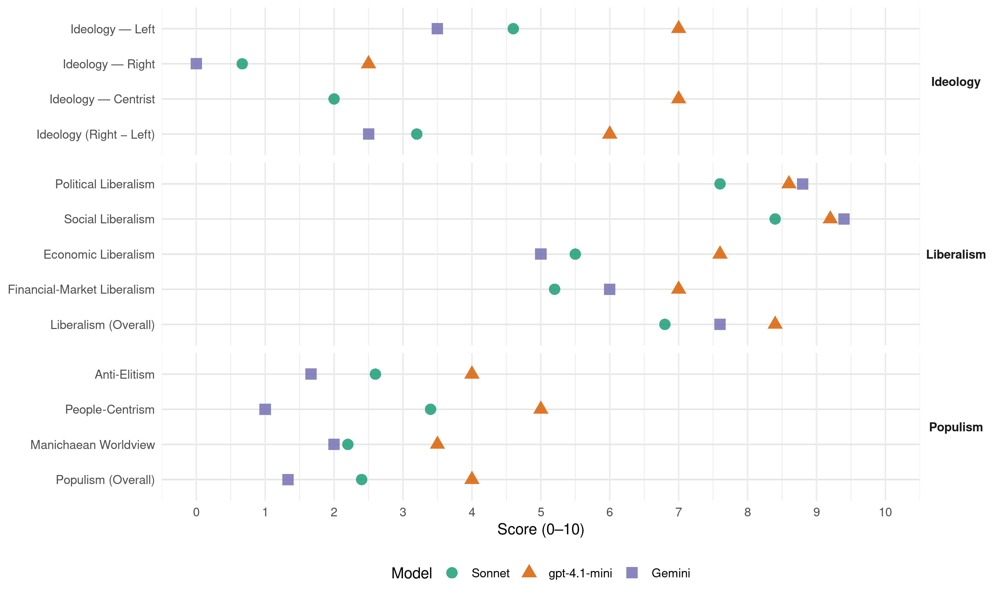

PSOE (Spain, 2019)
manifesto_id 33320_201904
Get full text: This site shows derived annotations and short verbatim quotes only. The full manifesto text is © Manifesto Project / WZB — obtain it via manifesto-project.wzb.eu using the manifesto_id above.
Headline scores
| Dimension | Sonnet | gpt-4.1-mini | Gemini |
|---|---|---|---|
| Populism (Overall) | 2.4 | 4.0 | 1.3 |
| Anti-Elitism | 2.6 | 4.0 | 1.7 |
| People-Centrism | 3.4 | 5.0 | 1.0 |
| Manichaean Worldview | 2.2 | 3.5 | 2.0 |
| Ideology (Right − Left) | 3.2 | 6.0 | 2.5 |
| Liberalism (Overall) | 6.8 | 8.4 | 7.6 |
| Political Liberalism | 7.6 | 8.6 | 8.8 |
| Social Liberalism | 8.4 | 9.2 | 9.4 |
| Economic Liberalism | 5.5 | 7.6 | 5.0 |
| Financial-Market Liberalism | 5.2 | 7.0 | 6.0 |
Evidence per dimension
Economic Liberalism
Gemini · score 4.0 · verified · chunk 1
“alternativa al neoliberalismo como paradigma”
tiene el objetivo de construir una alternativa al neoliberalismo como paradigma económico y social dominante.
Gemini · score 4.0 · verified · chunk 2
“desequilibrios generados por el funcionamiento del mercado”
última red de protección ante la desigualdad generada por el funcionamiento del mercado, desde la insuficiencia actual
Gemini · score 6.0 · verified · chunk 3
“desarrollo de las industrias culturales”
Pacto de Estado por la Cultura, que proteja e impulse la actividad cultural, contribuya al desarrollo de las industrias culturales
Gemini · score 6.0 · mixed · chunk 4
“estimular la inversión privada”
Facilitar y estimular la inversión privada para alcanzar una inversión total en innovación e I+D que represente como mínimo el 2% del PIB
Gemini · score 6.0 · verified · chunk 5
“política comercial europea progresista e inclusiva”
Promoveremos una política comercial europea progresista e inclusiva, basada en las reglas multilaterales
gpt-4.1-mini · score 7.0 · verified · chunk 1
“política económica marcadamente europeísta que incluya las reformas necesarias”
…el PSOE se compromete a llevar a cabo una política económica marcadamente europeísta que incluya las reformas necesarias para favorecer un crecimiento económico robusto y la creación de empleo de calidad…
gpt-4.1-mini · score 8.0 · verified · chunk 2
“la universalización de la educación de 0 a 3 as”
Desarrollar los Servicios Plicos con criterios de equidad orientados a romper el ciclo de las desventajas de origen en la infancia y que proporcionen un sistema de cuidados a los adultos, de forma que favorezcan las posibilidades de la conciliación para hombres y mujeres y facilitando la natalidad. En concreto: a)La universalización de la educación de 0-3 as.
gpt-4.1-mini · score 8.0 · verified · chunk 3
“Impulsar mediante un acuerdo con el Instituto de Crédito Oficial la creación de un fondo de capital riesgo y capital nido dirigido, entre otros objetivos, a la modernización e internacionalización de las empresas culturales y creativas españolas”
…oImpulsar mediante un acuerdo con el Instituto de Crédito Oficial la creación de un fondo de capital riesgo y capital nido dirigido, entre otros objetivos, a la modernización e internacionalización de las empresas culturales y creativas españolas. oAcompar la labor de promoción y el marketing de las obras y productos para que puedan competir en mejores condiciones con las de otras nacionalidades…
gpt-4.1-mini · score 7.0 · verified · chunk 4
“promover la inversión privadapara alcanzar una inversión total en innovación e I+D que represente como mínimo el 2% del PIB”
Facilitar y estimular la inversión privadapara alcanzar una inversión total en innovación e I+D que represente como mínimo el 2% del PIB, la media actual de la UE. Asimismo, recuperar como objetivo estratégico el horizonte europeo de alcanzar una inversión total del 3% del PIB…
gpt-4.1-mini · score 8.0 · verified · chunk 5
“promoveremos una política comercial europea progresista e inclusiva”
Promoveremos una política comercial europea progresista e inclusiva, basada en las reglas multilaterales, que tenga en cuenta la lucha contra el cambio climático, la Agenda 2030, los estándares laborales y sociales y que incorpore mecanismos de compensación a los perdedores.
Sonnet · score 5.0 · mixed · chunk 1
“marco regulatorio favorable, la reducción de los costes administrativos”
Desarrollaremos una estrategia de apoyo a la creación y crecimiento de empresas, mediante un marco regulatorio favorable, la reducción de los costes administrativos y la reordenación de los instrumentos de financiación.
Sonnet · score 4.0 · verified · chunk 2
“reforma fiscal que corrija los grandes desequilibrios”
Es necesario afrontar, además, una reforma fiscal que corrija los grandes desequilibrios existentes en el modelo vigente.
Sonnet · score 6.0 · verified · chunk 3
“competir en mejores condiciones con las de otras”
Acompar la labor de promoción y el marketing de las obras y productos para que puedan competir en mejores condiciones con las de otras nacionalidades
Sonnet · score 6.0 · verified · chunk 4
“Facilitar y estimular la inversión privada”
Facilitar y estimular la inversión privada para alcanzar una inversión total en innovación e I+D que represente como mínimo el 2% del PIB, la media actual de la UE
Sonnet · score 6.0 · verified · chunk 5
“política comercial europea progresista e inclusiva”
Promoveremos una política comercial europea progresista e inclusiva, basada en las reglas multilaterales, que tenga en cuenta la lucha contra el cambio climático
Financial-Market Liberalism
Gemini · score 6.0 · verified · chunk 1
“supervisión del sistema financiero”
permiten reforzar la supervisión del sistema financiero y proteger mejor a los ciudadanos.
Gemini · score 6.0 · verified · chunk 3
“fondo de capital riesgo”
Instituto de Crédito Oficial la creación de un fondo de capital riesgo y capital nido
Gemini · score 7.0 · verified · chunk 4
“sociedad de capital riesgo INNVIERTE”
puesta en marcha de nuevo y reforzada la sociedad de capital riesgo INNVIERTE, para dar impulso a la coinversión pública en empresas de base tecnológica.
Gemini · score 5.0 · verified · chunk 5
“mejor regulación de las finanzas internacionales”
foro, promoveremos una mejor regulación de las finanzas internacionales y una mayor coordinación en materia fiscal
gpt-4.1-mini · score 7.0 · verified · chunk 1
“reforzar la supervisión del sistema financiero y proteger mejor a los ciudadanos”
…El Gobierno ha aprobado ya la transposición de varias directivas europeas que permiten reforzar la supervisión del sistema financiero y proteger mejor a los ciudadanos. Consolidaremos estos avances, con la creación de la Autoridad de Protección del Cliente Financiero…
gpt-4.1-mini · score 7.0 · verified · chunk 3
“Impulsar mediante un acuerdo con el Instituto de Crédito Oficial la creación de un fondo de capital riesgo y capital nido dirigido, entre otros objetivos, a la modernización e internacionalización de las empresas culturales y creativas españolas”
…oImpulsar mediante un acuerdo con el Instituto de Crédito Oficial la creación de un fondo de capital riesgo y capital nido dirigido, entre otros objetivos, a la modernización e internacionalización de las empresas culturales y creativas españolas. oAcompar la labor de promoción y el marketing de las obras y productos para que puedan competir en mejores condiciones con las de otras nacionalidades…
gpt-4.1-mini · score 7.0 · verified · chunk 4
“se ha puesto en marcha de nuevo y reforzada la sociedad de capital riesgo INNVIERTE, para dar impulso a la coinversión pública en empresas de base tecnológica”
En estos meses, se ha redisedo y lanzado el nuevo Programa Cervera… se ha puesto en marcha de nuevo y reforzada la sociedad de capital riesgo INNVIERTE, para dar impulso a la coinversión pública en empresas de base tecnológica…
gpt-4.1-mini · score 7.0 · verified · chunk 5
“promoveremos una mejor regulación de las finanzas internacionales”
Consolidaremos nuestra participación en el G-20 para, desde ese foro, promover una gobernanza económica mundial más transparente y eficaz y una globalización más justa. Desde este foro, promoveremos una mejor regulación de las finanzas internacionales y una mayor coordinación en materia fiscal, avanzando hacia la abolición de los paraísos fiscales y abordar otros retos: la igualdad de género, el cambio climático, la pérdida de biodiversidad.
Sonnet · score 5.0 · verified · chunk 1
“supervisión del sistema financiero y proteger”
El Gobierno ha aprobado ya la transposición de varias directivas europeas que permiten reforzar la supervisión del sistema financiero y proteger mejor a los ciudadanos. Consolidaremos estos avances, con la creación de la Autoridad de Protección del Cliente Financiero.
Sonnet · score 5.0 · verified · chunk 2
“servicios financieros, transportes, telecomunicaciones, energía”
organismos sectoriales creen entidades específicas para la resolución de conflictos en los diferentes sectores: servicios financieros, transportes, telecomunicaciones, energía
Sonnet · score 5.0 · verified · chunk 3
“fondo de capital riesgo y capital nido”
Impulsar mediante un acuerdo con el Instituto de Crédito Oficial la creación de un fondo de capital riesgo y capital nido dirigido
Sonnet · score 6.0 · verified · chunk 4
“sociedad de capital riesgo INNVIERTE”
se ha puesto en marcha de nuevo y reforzada la sociedad de capital riesgo INNVIERTE, para dar impulso a la coinversión pública en empresas de base tecnológica
Sonnet · score 5.0 · verified · chunk 5
“mejor regulación de las finanzas internacionales”
promoveremos una mejor regulación de las finanzas internacionales y una mayor coordinación en materia fiscal, avanzando hacia la abolición de los paraísos fiscales
Political Liberalism
Gemini · score 9.0 · verified · chunk 1
“defender los valores democráticos”
fortalecer el proyecto social de la UE y defender los valores democráticos, en un contexto de serio riesgo
Gemini · score 8.0 · verified · chunk 2
“derecho de sufragio activo y pasivo”
abrirá el debate sobre la posibilidad de otorgar el derecho de sufragio activo y pasivo a las personas jvenes de 16 y 17 as.
Gemini · score 9.0 · verified · chunk 3
“instituciones democráticas renovadas”
NUEVOS DERECHOS PARA LA CIUDADANIA EN UNA SOCIEDAD DIGITAL, EN UN TERRITORIO COHESIONADO Y CON INSTITUCIONES DEMOCRÁTICAS RENOVADAS
Gemini · score 9.0 · verified · chunk 4
“exigencias del Estado democrático de Derecho”
ordenación de las políticas migratorias conforme a los principios y exigencias del Estado democrático de Derecho, el respeto a la dignidad de todo ser humano
Gemini · score 9.0 · verified · chunk 5
“social y democrático de Derecho”
defensa en el mundo de los valores de nuestro Estado social y democrático de Derecho, y de los que caracterizan
gpt-4.1-mini · score 8.0 · verified · chunk 1
“valores democráticos, en un contexto de serio riesgo”
…defender los valores democráticos, en un contexto de serio riesgo, tras el avance de los partidos euroescépticos, así como el auge de los populismos y la deriva xenófoba y renacionalizadora en muchos de los países miembros…
gpt-4.1-mini · score 9.0 · verified · chunk 2
“la Constitución Española, desde nuestra concepción del Estado del Bienestar”
El Sistema de Servicios Sociales inicia su desarrollo a partir de la aprobación de la Constitución Española, desde nuestra concepción del Estado del Bienestar y la solidaridad, muy alejada de los postulados de quienes promulgan sistemas privados que han comportado inseguridad y desigualdad.
gpt-4.1-mini · score 9.0 · verified · chunk 3
“garantizando la igualdad efectiva entre hombres y mujeres; mediante la interlocución con la sociedad y sus organizaciones; desarrollando las buenas prácticas de una democracia participativa y deliberativa en los procesos de toma de decisiones; respetando el pluralismo y una información veraz desde unos medios públicos de comunicación independientes; desde la transparencia que signifique el acceso a la información y a las decisiones de un gobierno abierto en aplicación de un cigo ético y de buen gobierno”
…garantizando la igualdad efectiva entre hombres y mujeres; mediante la interlocución con la sociedad y sus organizaciones; desarrollando las buenas prácticas de una democracia participativa y deliberativa en los procesos de toma de decisiones; respetando el pluralismo y una información veraz desde unos medios públicos de comunicación independientes; desde la transparencia que signifique el acceso a la información y a las decisiones de un gobierno abierto en aplicación de un cigo ético y de buen gobierno; buscando la eficacia e integridad en el funcionamiento del Estado…
gpt-4.1-mini · score 8.0 · verified · chunk 4
“políticas migratorias conforme a los principios y exigencias del Estado democrático de Derecho, el respeto a la dignidad de todo ser humano y la garantía de los derechos humanos”
El primer pilar es una ordenación de las políticas migratorias conforme a los principios y exigencias del Estado democrático de Derecho, el respeto a la dignidad de todo ser humano y la garantía de los derechos humanos como prioridad de toda política pública, también de inmigración…
gpt-4.1-mini · score 9.0 · verified · chunk 5
“defensa de los Derechos Humanos”
oEl Gobierno socialista ha mostrado su adhesión al multilateralismo y a la defensa de los Derechos Humanos, con la presentación en junio de 2019 en Nueva York de nuestro Plan de Acción para la implementación de la Agenda 2030.
Sonnet · score 8.0 · verified · chunk 1
“amante de la democracia y de sus reglas”
ante todo y sobre todo es amante de la democracia y de sus reglas. El PSOE que gobierna en España, para quien quiera ver su práctica diaria, es un partido que se preocupa no solamente de defender sus posiciones, sino también de pactarlas y negociarlas
Sonnet · score 6.0 · verified · chunk 2
“Retomar el Pacto de Toledo y el diálogo social”
Retomar el Pacto de Toledo y el diálogo social como herramientas vertebradoras de la Seguridad Social.
Sonnet · score 8.0 · verified · chunk 3
“velando por una separación de poderes efectiva”
garantizando la independencia de los organismos constitucionales y reguladores; velando por una separación de poderes efectiva
Sonnet · score 8.0 · verified · chunk 4
“principios y exigencias del Estado democrático de Derecho”
una ordenación de las políticas migratorias conforme a los principios y exigencias del Estado democrático de Derecho, el respeto a la dignidad de todo ser humano y la garantía de los derechos humanos
Sonnet · score 8.0 · verified · chunk 5
“instituciones democráticas en esos países”
propiciando un proceso pacífico para restablecer las instituciones democráticas en esos países, que comience por la liberación de los presos políticos
Liberalism (Overall)
Gemini · score 7.0 · verified · chunk 1
“defender los valores democráticos”
fortalecer el proyecto social de la UE y defender los valores democráticos, en un contexto de serio riesgo
Gemini · score 7.0 · verified · chunk 2
“acciones contra la discriminación por raz de edad”
Ley de Igualdad de Trato que se contemple acciones contra la discriminación por raz de edad.
Gemini · score 8.0 · verified · chunk 3
“instituciones democráticas renovadas”
NUEVOS DERECHOS PARA LA CIUDADANIA EN UNA SOCIEDAD DIGITAL, EN UN TERRITORIO COHESIONADO Y CON INSTITUCIONES DEMOCRÁTICAS RENOVADAS
Gemini · score 8.0 · verified · chunk 4
“exigencias del Estado democrático de Derecho”
ordenación de las políticas migratorias conforme a los principios y exigencias del Estado democrático de Derecho, el respeto a la dignidad de todo ser humano
Gemini · score 8.0 · verified · chunk 5
“social y democrático de Derecho”
defensa en el mundo de los valores de nuestro Estado social y democrático de Derecho, y de los que caracterizan
gpt-4.1-mini · score 8.0 · verified · chunk 1
“defender los valores democráticos, en un contexto de serio riesgo”
…defender los valores democráticos, en un contexto de serio riesgo, tras el avance de los partidos euroescépticos, así como el auge de los populismos y la deriva xenófoba y renacionalizadora en muchos de los países miembros…
gpt-4.1-mini · score 9.0 · verified · chunk 2
“la Constitución Española, desde nuestra concepción del Estado del Bienestar”
El Sistema de Servicios Sociales inicia su desarrollo a partir de la aprobación de la Constitución Española, desde nuestra concepción del Estado del Bienestar y la solidaridad, muy alejada de los postulados de quienes promulgan sistemas privados que han comportado inseguridad y desigualdad.
gpt-4.1-mini · score 8.0 · verified · chunk 3
“garantizando la igualdad efectiva entre hombres y mujeres; mediante la interlocución con la sociedad y sus organizaciones; desarrollando las buenas prácticas de una democracia participativa y deliberativa en los procesos de toma de decisiones; respetando el pluralismo y una información veraz desde unos medios públicos de comunicación independientes; desde la transparencia que signifique el acceso a la información y a las decisiones de un gobierno abierto en aplicación de un cigo ético y de buen gobierno”
…garantizando la igualdad efectiva entre hombres y mujeres; mediante la interlocución con la sociedad y sus organizaciones; desarrollando las buenas prácticas de una democracia participativa y deliberativa en los procesos de toma de decisiones; respetando el pluralismo y una información veraz desde unos medios públicos de comunicación independientes; desde la transparencia que signifique el acceso a la información y a las decisiones de un gobierno abierto en aplicación de un cigo ético y de buen gobierno; buscando la eficacia e integridad en el funcionamiento del Estado…
gpt-4.1-mini · score 8.0 · verified · chunk 4
“políticas migratorias conforme a los principios y exigencias del Estado democrático de Derecho, el respeto a la dignidad de todo ser humano y la garantía de los derechos humanos”
El primer pilar es una ordenación de las políticas migratorias conforme a los principios y exigencias del Estado democrático de Derecho, el respeto a la dignidad de todo ser humano y la garantía de los derechos humanos como prioridad de toda política pública, también de inmigración…
gpt-4.1-mini · score 9.0 · verified · chunk 5
“defensa de los Derechos Humanos”
oEl Gobierno socialista ha mostrado su adhesión al multilateralismo y a la defensa de los Derechos Humanos, con la presentación en junio de 2019 en Nueva York de nuestro Plan de Acción para la implementación de la Agenda 2030.
Sonnet · score 7.0 · verified · chunk 1
“regeneración democrática, combatiendo la corrupción”
La regeneración democrática, combatiendo la corrupción y el fraude fiscal y laboral, reconstruyendo las relaciones entre la política y el mercado, de forma que se blinde el interés general frente a la concentración y la desregulación del poder económico.
Sonnet · score 6.0 · verified · chunk 2
“derecho a elegir con libertad hasta el último minuto”
Aprobar una ley para regular la eutanasia y la muerte digna, defendiendo el derecho a elegir con libertad hasta el último minuto de nuestra vida
Sonnet · score 7.0 · verified · chunk 3
“democracia avanzada que prestigie las instituciones”
dar inicio a un tiempo de oportunidades para promover una democracia avanzada que prestigie las instituciones
Sonnet · score 7.0 · verified · chunk 4
“Estado democrático de Derecho, el respeto a la dignidad”
una ordenación de las políticas migratorias conforme a los principios y exigencias del Estado democrático de Derecho, el respeto a la dignidad de todo ser humano y la garantía de los derechos humanos
Sonnet · score 7.0 · verified · chunk 5
“derechos humanos, la sostenibilidad y la paz”
poniendo con ello de manifiesto que los derechos humanos, la sostenibilidad y la paz son los ejes principales de la acción exterior española
Anti-Elitism
Gemini · score 0.0 · verified · chunk 1
“el auge de los populismos”
en un contexto de serio riesgo, tras el avance de los partidos euroescépticos, así como el auge de los populismos y la deriva xenófoba
Gemini · score 2.0 · verified · chunk 3
“amenazas que realizan los grandes poderes económicos”
intoxicación de las redes sociales o ante las presiones y amenazas que realizan los grandes poderes económicos para condicionar las decisiones
Gemini · score 3.0 · verified · chunk 4
“no esté supeditada a los intereses de las élites”
codesarrollo con los países de origen de los flujos migratorios y los de tránsito, que no esté supeditada a los intereses de las élites de esos países, ni tampoco a nudos intereses de mercado
gpt-4.1-mini · score 6.0 · verified · chunk 1
“la concentración y la desregulación del poder económico”
…combatiendo la corrupción y el fraude fiscal y laboral, reconstruyendo las relaciones entre la política y el mercado, de forma que se blinde el interés general frente a la concentración y la desregulación del poder económico. / LO QUE ESPAÑA NECESITA 13. Para cumplir con nuestros compromisos…
gpt-4.1-mini · score 2.0 · verified · chunk 4
“que no esté supeditada a los intereses de las élites de esos países”
…política de cooperación y codesarrollo con los países de origen de los flujos migratorios y los de tránsito, que no esté supeditada a los intereses de las élites de esos países, ni tampoco a nudos intereses de mercado o geoestratégicos, y que tenga, más allá de los agentes fundamentales de las administraciones públicas…
Sonnet · score 4.0 · verified · chunk 1
“alternativa al neoliberalismo como paradigma económico”
La socialdemocracia renovada que el PSOE está construyendo desde el 39º Congreso es la alternativa a las derechas populistas y a la involución que traen consigo, y también tiene el objetivo de construir una alternativa al neoliberalismo como paradigma económico y social dominante.
Sonnet · score 3.0 · verified · chunk 2
“los gobiernos del PP sometieron el Plan Concertado”
A partir del 2012, los gobiernos del PP sometieron el Plan Concertado de Servicios Sociales a severos recortes.
Sonnet · score 2.0 · verified · chunk 3
“grandes poderes económicos para condicionar”
ante las presiones y amenazas que realizan los grandes poderes económicos para condicionar las decisiones de los gobiernos
Sonnet · score 2.0 · verified · chunk 4
“no esté supeditada a los intereses de las élites de esos países”
una política de cooperación y codesarrollo con los países de origen de los flujos migratorios y los de tránsito, que no esté supeditada a los intereses de las élites de esos países, ni tampoco a nudos intereses de mercado o geoestratégicos
Sonnet · score 2.0 · verified · chunk 5
“grandes corporaciones, o bien caracterizarse por el cumplimiento”
puede estar en manos de los estados más poderosos, y de las grandes corporaciones, o bien caracterizarse por el cumplimiento de unas normas elaboradas en el marco de un multilateralismo
Ideology — Centrist
gpt-4.1-mini · score 7.0 · verified · chunk 1
“sus formas son inequívocamente centradas, democráticas, reformistas”
…se ha puesto de manifiesto en estos 10 meses de gobierno, que sus formas son inequívocamente centradas, democráticas, reformistas. El reformismo, el diálogo y la moderación fueron siempre compatibles con propuestas ambiciosas y profundamente transformadoras…
gpt-4.1-mini · score 7.0 · verified · chunk 4
“Necesitamos una política basada en el realismo, la solidaridad, y desconectada de las luchas partidistas”
Necesitamos una política basada en el realismo, la solidaridad, y desconectada de las luchas partidistas, siguiendo una visión integral del feneno migratorio. Necesitamos buscar el consenso más amplio posible porque se trata del porvenir humano del país…
Sonnet · score 3.0 · verified · chunk 1
“voto centrado, moderado, sensato y moderno”
es lógico preguntarse por quién va a ganar la batalla del voto centrado, moderado, sensato y moderno. Una pregunta que tiene una respuesta clara: esa ‘batalla’ ya la está ganando el PSOE.
Sonnet · score 2.0 · verified · chunk 2
“garantizar a toda la ciudadanía la seguridad”
Significa también garantizar a toda la ciudadanía la seguridad de que, con independencia de su situación económica
Sonnet · score 2.0 · verified · chunk 3
“consenso más amplio posible”
Necesitamos buscar el consenso más amplio posible porque se trata del porvenir humano del país
Sonnet · score 2.0 · verified · chunk 4
“buscar el consenso más amplio posible”
Necesitamos buscar el consenso más amplio posible porque se trata del porvenir humano del país, y, a menudo, de futuros nacionales españoles y españolas
Sonnet · score 1.0 · verified · chunk 5
“sin ambages por la segunda alternativa”
Los y las socialistas españoles apostamos sin ambages por la segunda alternativa, cuyo principal promotor no puede ser otro que una Unión Europea fuerte
Ideology — Left
Gemini · score 3.0 · verified · chunk 3
“como partido de la izquierda”
Para el PSOE, como partido de la izquierda, regenerar la política y las instituciones
Gemini · score 4.0 · verified · chunk 4
“ni tampoco a nudos intereses de mercado”
no esté supeditada a los intereses de las élites de esos países, ni tampoco a nudos intereses de mercado o geoestratégicos, y que tenga, más allá de los agentes
gpt-4.1-mini · score 8.0 · verified · chunk 1
“lucha contra las desigualdades, y en particular en la necesidad de reorientar el modelo económico imperante”
…en el plano laboral, el PSOE puso un foco prioritario en la lucha contra las desigualdades, y en particular en la necesidad de reorientar el modelo económico imperante, basado en bajos salarios y precariedad, construyendo en España otro modelo alternativo e inclusivo…
gpt-4.1-mini · score 6.0 · verified · chunk 4
“una política integral sobre el feneno migratorio que combina respeto por los derechos humanos de los inmigrantes, cooperación con los países de origen y tránsito, control de la inmigración irregular, lucha contra la trata de seres humanos y políticas de integración”
En diez meses hemos iniciado una política integral sobre el feneno migratorio que combina respeto por los derechos humanos de los inmigrantes, cooperación con los países de origen y tránsito, control de la inmigración irregular, lucha contra la trata de seres humanos y políticas de integración. Y hemos impulsado la inmigración como uno de los asuntos prioritarios en la agenda política de la Unión Europea…
Sonnet · score 6.0 · verified · chunk 1
“lucha contra las desigualdades”
en el plano laboral, el PSOE puso un foco prioritario en la lucha contra las desigualdades, y en particular en la necesidad de reorientar el modelo económico imperante, basado en bajos salarios y precariedad
Sonnet · score 4.0 · verified · chunk 2
“injusta distribución de la riqueza en nuestro país”
la situación actual del sistema público de pensiones es una manifestación más de la injusta distribución de la riqueza en nuestro país
Sonnet · score 3.0 · verified · chunk 3
“recuperar el Estado de Bienestar combatiendo las desigualdades”
prestigie las instituciones, sirva al objetivo de recuperar el Estado de Bienestar combatiendo las desigualdades
Sonnet · score 5.0 · verified · chunk 4
“receta neoliberal’ de salarios bajos y empleos precarios”
garantizar un desarrollo económico y social justo y duradero, muy diferente a la ‘receta neoliberal’ de salarios bajos y empleos precarios. Atender mejor las necesidades de la inmensa mayoría
Sonnet · score 5.0 · verified · chunk 5
“una globalización más justa”
promover una gobernanza económica mundial más transparente y eficaz y una globalización más justa. Desde este foro, promoveremos una mejor regulación de las finanzas internacionales
Ideology (Right − Left)
Gemini · score 2.0 · verified · chunk 3
“como partido de la izquierda”
Para el PSOE, como partido de la izquierda, regenerar la política y las instituciones
Gemini · score 3.0 · verified · chunk 4
“no esté supeditada a los intereses de las élites”
codesarrollo con los países de origen de los flujos migratorios y los de tránsito, que no esté supeditada a los intereses de las élites de esos países, ni tampoco a nudos intereses de mercado
gpt-4.1-mini · score 7.0 · verified · chunk 1
“la socialdemocracia renovada que el PSOE está construyendo desde el 39º Congreso es la alternativa a las derechas populistas”
…la socialdemocracia renovada que el PSOE está construyendo desde el 39º Congreso es la alternativa a las derechas populistas y a la involución que traen consigo, y también tiene el objetivo de construir una alternativa al neoliberalismo como paradigma económico y social dominante…
gpt-4.1-mini · score 5.0 · verified · chunk 4
“una política integral sobre el feneno migratorio que combina respeto por los derechos humanos de los inmigrantes, cooperación con los países de origen y tránsito”
En diez meses hemos iniciado una política integral sobre el feneno migratorio que combina respeto por los derechos humanos de los inmigrantes, cooperación con los países de origen y tránsito, control de la inmigración irregular, lucha contra la trata de seres humanos y políticas de integración…
Sonnet · score 5.0 · verified · chunk 1
“derechas populistas y a la involución”
La socialdemocracia renovada que el PSOE está construyendo desde el 39º Congreso es la alternativa a las derechas populistas y a la involución que traen consigo
Sonnet · score 3.0 · verified · chunk 2
“injusta distribución de la riqueza en nuestro país”
la situación actual del sistema público de pensiones es una manifestación más de la injusta distribución de la riqueza en nuestro país
Sonnet · score 2.0 · verified · chunk 3
“partido de la izquierda, regenerar la política”
Para el PSOE, como partido de la izquierda, regenerar la política y las instituciones es un objetivo
Sonnet · score 3.0 · verified · chunk 4
“receta neoliberal’ de salarios bajos y empleos precarios”
garantizar un desarrollo económico y social justo y duradero, muy diferente a la ‘receta neoliberal’ de salarios bajos y empleos precarios
Sonnet · score 3.0 · verified · chunk 5
“lucha contra las desigualdades, la pobreza, la opresión”
el desarrollo del concepto de seguridad humana, así como la lucha contra las desigualdades, la pobreza, la opresión y la violación de los derechos humanos
Ideology — Right
Gemini · score 0.0 · verified · chunk 3
“frente nacional de las derechas”
ante la amenaza de involución que representa el frente nacional de las derechas.
gpt-4.1-mini · score 2.0 · verified · chunk 1
“la deriva xenófoba y renacionalizadora en muchos de los países miembros”
…en un contexto de serio riesgo, tras el avance de los partidos euroescépticos, así como el auge de los populismos y la deriva xenófoba y renacionalizadora en muchos de los países miembros…
gpt-4.1-mini · score 3.0 · verified · chunk 4
“completar el proyecto de las obras de modernización y refuerzo de la seguridad en la frontera de las ciudades automas de Ceuta y Melilla”
…Adecuar la normativa sobre las denominadas “devoluciones en caliente” en el espacio fronterizo entre Ceuta y Melilla y el territorio del Reino de Marruecos, a la sentencia del Tribunal Europeo de Derechos Humanos… completar el proyecto de las obras de modernización y refuerzo de la seguridad en la frontera de las ciudades automas de Ceuta y Melilla…
Sonnet · score 1.0 · verified · chunk 1
“auge de los populismos y la deriva xenófoba”
en un contexto de serio riesgo, tras el avance de los partidos euroescépticos, así como el auge de los populismos y la deriva xenófoba y renacionalizadora en muchos de los países miembros.
Sonnet · score 1.0 · verified · chunk 3
“control de la inmigración irregular”
respeto por los derechos humanos de los inmigrantes, cooperación con los países de origen y tránsito, control de la inmigración irregular
Sonnet · score 0.0 · verified · chunk 5
“El repliegue nacionalista no es posible”
El mundo es hoy plenamente interdependiente, tanto en materia comercial y financiera. El repliegue nacionalista no es posible, y ni mucho menos deseable.
Manichaean Worldview
Gemini · score 2.0 · verified · chunk 3
“amenaza de involución que representa el frente nacional”
Precisamente ahora, ante la amenaza de involución que representa el frente nacional de las derechas.
gpt-4.1-mini · score 5.0 · verified · chunk 1
“la involución que traen consigo, y también tiene el objetivo de construir una alternativa al neoliberalismo”
…la socialdemocracia renovada que el PSOE está construyendo desde el 39º Congreso es la alternativa a las derechas populistas y a la involución que traen consigo, y también tiene el objetivo de construir una alternativa al neoliberalismo como paradigma económico y social dominante…
gpt-4.1-mini · score 2.0 · verified · chunk 4
“rechazo de concepciones no realistas y enunciadas, la mayor parte de las veces, en términos demagicos”
Partimos del rechazo de concepciones no realistas y enunciadas, la mayor parte de las veces, en términos demagicos, como la de “fronteras abiertas”. Pero eso no impide reconocer que, en el tránsito de la frontera, es absolutamente prioritario…
Sonnet · score 3.0 · verified · chunk 1
“bloqueo provocado por el PP y Cs”
el conjunto de decisiones que no han podido implementarse a causa del bloqueo provocado por el PP y Cs en el Congreso– constituye una poderosa herramienta para hacer visible la viabilidad de políticas alternativas
Sonnet · score 2.0 · verified · chunk 2
“política en materia de adicciones que avanzaba en sentido contrario”
Las dos últimas legislaturas del Partido Popular se caracterizaron por una política en materia de adicciones que avanzaba en sentido contrario a las recomendaciones de organismos internacionales
Sonnet · score 2.0 · verified · chunk 3
“amenaza de involución que representa el frente nacional”
Precisamente ahora, ante la amenaza de involución que representa el frente nacional de las derechas
Sonnet · score 2.0 · verified · chunk 4
“muy diferente a la ‘receta neoliberal’ de salarios bajos”
El conocimiento y la innovación son decisivos para garantizar un desarrollo económico y social justo y duradero, muy diferente a la ‘receta neoliberal’ de salarios bajos y empleos precarios
Sonnet · score 2.0 · verified · chunk 5
“políticas regresivas en derechos de los gobiernos del Partido Popular”
en un esfuerzo de volver a situar a España como referente mundial en la lucha contra todo tipo de discriminación, frente a las políticas regresivas en derechos de los gobiernos del Partido Popular
People-Centrism
Gemini · score 1.0 · verified · chunk 3
“empoderar a la ciudadanía”
una de las claves de esa apertura reside en empoderar a la ciudadanía, a las entidades y colectivos
gpt-4.1-mini · score 7.0 · verified · chunk 1
“un nuevo Contrato Social, un nuevo pacto entre el capital, el trabajo y el planeta”
…impulsaremos un nuevo Contrato Social, un nuevo pacto entre el capital, el trabajo y el planeta (un Green New Deal), que nos permita hacer frente a la necesaria transición ecolica mediante el fomento de la máxima eficiencia en el uso de los recursos naturales…
gpt-4.1-mini · score 3.0 · verified · chunk 4
“se trata del porvenir humano del país, y, a menudo, de futuros nacionales españoles y españolas”
Necesitamos buscar el consenso más amplio posible porque se trata del porvenir humano del país, y, a menudo, de futuros nacionales españoles y españolas. Una política basada en tres pilares: 1. El primer pilar es una ordenación de las políticas migratorias…
Sonnet · score 5.0 · verified · chunk 1
“mayoría de las clases medias y trabajadoras”
poniendo en marcha una batería de propuestas adaptadas a las necesidades de la mayoría de las clases medias y trabajadoras, estancadas o en retroceso a después de cuatro años de recuperación económica desde la salida de la crisis.
Sonnet · score 3.0 · verified · chunk 2
“garantizar a toda la ciudadanía la seguridad”
Significa también garantizar a toda la ciudadanía la seguridad de que, con independencia de su situación económica
Sonnet · score 3.0 · verified · chunk 3
“empoderar a la ciudadanía”
una de las claves de esa apertura reside en empoderar a la ciudadanía, a las entidades y colectivos como interlocutores representativos
Sonnet · score 3.0 · verified · chunk 4
“Atender mejor las necesidades de la inmensa mayoría de la ciudadanía”
muy diferente a la ‘receta neoliberal’ de salarios bajos y empleos precarios. Atender mejor las necesidades de la inmensa mayoría de la ciudadanía, utilizando menos recursos naturales
Sonnet · score 3.0 · verified · chunk 5
“en beneficio de toda la ciudadanía”
de que España sea activa, relevante e influyente en la Unión Europea (UE) y en el mundo, y de que eso redunde en beneficio de toda la ciudadanía
Populism (Overall)
Gemini · score 0.0 · verified · chunk 1
“el auge de los populismos”
en un contexto de serio riesgo, tras el avance de los partidos euroescépticos, así como el auge de los populismos y la deriva xenófoba
Gemini · score 2.0 · verified · chunk 3
“amenazas que realizan los grandes poderes económicos”
intoxicación de las redes sociales o ante las presiones y amenazas que realizan los grandes poderes económicos para condicionar las decisiones
Gemini · score 2.0 · verified · chunk 4
“no esté supeditada a los intereses de las élites”
codesarrollo con los países de origen de los flujos migratorios y los de tránsito, que no esté supeditada a los intereses de las élites de esos países, ni tampoco a nudos intereses de mercado
gpt-4.1-mini · score 6.0 · verified · chunk 1
“la socialdemocracia renovada que el PSOE está construyendo desde el 39º Congreso es la alternativa a las derechas populistas”
…la socialdemocracia renovada que el PSOE está construyendo desde el 39º Congreso es la alternativa a las derechas populistas y a la involución que traen consigo, y también tiene el objetivo de construir una alternativa al neoliberalismo como paradigma económico y social dominante…
gpt-4.1-mini · score 2.0 · verified · chunk 4
“que no esté supeditada a los intereses de las élites de esos países”
…política de cooperación y codesarrollo con los países de origen de los flujos migratorios y los de tránsito, que no esté supeditada a los intereses de las élites de esos países, ni tampoco a nudos intereses de mercado o geoestratégicos, y que tenga, más allá de los agentes fundamentales de las administraciones públicas…
Sonnet · score 4.0 · verified · chunk 1
“concentra cada vez más la riqueza”
construcción de una alternativa a un modelo económico que concentra cada vez más la riqueza, en perjuicio de la mayoría de las clases medias y trabajadoras.
Sonnet · score 2.0 · verified · chunk 2
“severos recortes. Quedaron así rotos los consensos”
los gobiernos del PP sometieron el Plan Concertado de Servicios Sociales a severos recortes. Quedaron así rotos los consensos constitucionales
Sonnet · score 2.0 · verified · chunk 3
“fenenos del populismo y nacionalismos excluyentes”
a la vista de la incidencia de los fenenos del populismo y nacionalismos excluyentes que se extienden por este mundo globalizado
Sonnet · score 2.0 · verified · chunk 4
“no esté supeditada a los intereses de las élites”
una política de cooperación y codesarrollo con los países de origen de los flujos migratorios y los de tránsito, que no esté supeditada a los intereses de las élites de esos países
Sonnet · score 2.0 · verified · chunk 5
“políticas regresivas en derechos de los gobiernos del Partido Popular”
frente a las políticas regresivas en derechos de los gobiernos del Partido Popular. Durante este periodo, por ejemplo, el Consejo de Ministros
Social Liberalism